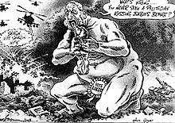

Ces pierres de Judée qui ont déjà vu le "massacre des innocents" sont maintenant ensanglantées par la confrontation féroce entre deux peuples sémitiques, l'hébreu et l'arabe. Les deux font confiance à la loi talion (œil pour œil...) qui peut paraître efficace dans son réalisme brutal et est au contraire terriblement trompeuse. C’est ici que naquit le Maître qui fut envoyé à la mort car, dans un monde dévasté par la haine, il a annoncé un scandale: pardon, amour pour les ennemis, en tendant l'autre joue. [Messori 2002, 2]
Traduction française de l’article d’Arturo Marzano, « La Seconda Intifada nella stampa italiana. La crisi della Basilica della Natività a Betlemme », par M.R. Macina
C’est par ces mots - qui semblent avoir peu à voir avec un événement purement politico-militaire –, que Vittorio Messori [Luzzatto Voghera G. 2005] décrivait, le 3 avril 2002, dans Il Corriere della Sera, les événements du premier jour de la crise de la basilique de la Nativité à Bethléem. Suite à un autre attentat terroriste commis cette fois contre un hôtel de Natanya [Israël], le 27 mars, Sharon avait lancé l'opération « bouclier de défense », qui visait à reprendre le contrôle des principales villes palestiniennes par l'armée israélienne. Le 2 avril, au cours des combats avec l'armée israélienne, un groupe d'environ 240 Palestiniens s'était réfugié dans la basilique de la Nativité, où se trouvaient une quarantaine de prêtres et de religieuses. L'armée avait encerclé le bâtiment, exhortant les Palestiniens à se rendre. C’est ainsi que commença la crise de la basilique de la Nativité, qui durera jusqu’au 11 mai, date à laquelle un accord sera conclu entre le Gouvernement israélien et l’Autorité palestinienne. L'article de Messori donne sans aucun doute à penser, car l'utilisation d’expressions telles que « peuples sémites », ainsi que la « loi du talion » judéo-musulmane, par opposition au « pardon » chrétien, laisse peu de doute sur les allusions faites par l’auteur à un répertoire sémantique clairement antijuif [Stefani, 2004], bien que remis dans son contexte et réadapté. Le même jour, cependant, une caricature de Giorgio Forattini était publiée par La Stampa: on y voyait l’enfant Jésus terrifié, qui se demandait si un char israélien n’allait pas le tuer « une autre fois ». La référence incontestable à un autre des thèmes classiques de l'antijudaïsme catholique, l'accusation de déicide, est également évidente.
Alors que l'article de Messori était muet à ce propoq, la publication du dessin a conduit Amos Luzzatto, président de l'Union des communautés juives italiennes, à rédiger une réponse très dure. Luzzatto soulignait en particulier la sinistre coïncidence de la nouvelle accusation de déicide, alors que des synagogues étaient attaquées en Europe, et qu'Israël était « diabolisé » comme s'il était l'unique responsable de ce qui se passait dans les territoires palestiniens occupés. Alors que le directeur du quotidien turinois même se sentait obligé de s'excuser [Sorge 2002, 7], un débat très âpre s'ouvrait sur les relations entre antisionisme et antisémitisme [Castellina 2002]. Dès la première année de la deuxième Intifada, les affrontements entre partisans et détracteurs d’Israël se faisaient entendre, puisqu’un nombre considérable de personnes du monde politique, social et culturel italien s’étaient fortement éloignées d’Israël, à l’instar de ce qui s’était passé en Israël. l’opération "Paix en Galilée" à l’été de 1982. Ce que Barbara Spinelli a écrit en octobre 2001 rappelle en fait à quel point Rosellina Balbi s’était rapprochée en 1982: les deux articles utilisaient des tonalités plutôt dures La politique israélienne et dans le même temps contenait une demande pressante pour les communautés juives italiennes pour un public se distancer de la direction israélienne [Levis Sullam 2004, Levi Della Torre 1982]. Le siège d'Arafat à la Muqata, le siège de l'Autorité palestinienne à Ramallah, qui a duré du 29 mars au 2 mai, les événements tragiques du camp de réfugiés de Jénine ainsi que la crise de la basilique de la Nativité de Bethléem sont entrés dans ce contexte et n’ont fait que rendre plus âpre le débat acharné entre ceux qui critiquent vivement Israël et ceux qui, au contraire, le soutiennent avec la même vigueur. À cet égard, il convient de mentionner que, le 15 avril 2002, sur la proposition d'Il Foglio de Giuliano Ferrara, s'est déroulée la journée de la fête d’Israel, à l'occasion de laquelle 15 000 personnes sont descendues dans les rues de Rome pour proclamer leur soutien sans faille d’Israël dans son droit de se défendre. Cette manifestation faisait suite à trois jours de publication dans Il Corriere della Sera, de l'article d’Oriana Fallaci, intitulé « Io, Oriana Fallaci, trovo vergognoso » (Moi, Oriana Fallaci, je trouve honteux), dans lequel la journaliste prenait ouvertement pris parti pour la défense d'Israël et taxait une partie considérable de la gauche italienne d'antisémitisme. Incapable qu’elle était de comprendre l'attaque que - selon elle - l'islamisme lançait, à travers la vague d'attentats-suicide qui avaient frappé Israël, contre la liberté et contre les valeurs occidentales. L'article faisait partie d'une série de controverses liées à des manifestations de soutien à la population palestinienne, au cours desquelles des personnes aux visages masqués avaient célébré des attentats-suicide contre la population israélienne et brûlé des drapeaux israéliens. [Mattone 2002].
C’est dans ce contexte que la société civile et le monde politique italien ont été confrontés à la crise de la basilique de la Nativité à Bethléem, certainement l’épisode le plus délicat et, en même temps, le plus controversé, parmi les nombreux actes de violence qui ont caractérisé le mois d’avril 2002. Sur le plan humanitaire, on se préoccupait de la vie des religieux qui étaient dans la basilique, car des combattants/terroristes 1 palestiniens s'y étaient réfugiés, tandis que l'ensemble de la population palestinienne résidant dans la ville, étaient soumis à un couvre-feu prolongé. D'un point de vue politico-diplomatique, une épreuve de force délicate avait lieu entre le Vatican et l'État d'Israël, remettant en question tous les grands sujets internationaux, des États-Unis à l'Union européenne, en passant par le monde arabe. Enfin, du point de vue symbolique, l'un des lieux saints les plus importants du monde chrétien - la basilique est construite sur la grotte où, selon la tradition, l'enfant Jésus est né - a été au centre d'un affrontement armé et a mobilisé une partie considérable de l'opinion publique mondiale, pas seulement chrétienne, de manière à préserver l'intégrité de l'église. Dans cette crise, de nombreuses questions étaient donc liées: premièrement, le conflit israélo-palestinien, qui avait déjà une forte connotation idéologique; deuxièmement, les relations entre le "monde arabo-islamique" et "l'Occident", à un moment particulièrement délicat après les événements du 11 septembre; enfin, la relation vieille de plusieurs siècles et contrastée, jamais complètement résolue, entre le christianisme et le judaïsme. C’est pourquoi, plus encore qu’il le faisait déjà avec les événements du conflit israélo-palestinien, affirmer que la crise de la basilique de la Nativité était un événement purement politique risquait de faire référence à d’autres questions tout à fait éloignées du contexte spécifique de la région. C’est pourquoi il semble très intéressant d’analyser la manière dont la presse italienne - et à travers elle, le monde politique, culturel et religieux italien - a présenté et interprété la crise de Bethléem dans le but de déterminer si et dans quelle mesure il y a eu un mélange de discours anti-sionistes et anti-juifs et/ou antisémites. Avant de présenter les résultats de l'analyse, une prémisse mérite d'être posée, à partir de ce qui a été produit en termes de réflexion théorique - peu, en réalité - sur la très délicate question du « lien » entre antisionisme et antisémitisme [Miccoli 2003]. Sur ce thème, de nombreuses contributions ont été apportées au contexte européen - et occidental en général – et sont apparues ces dernières années [Herf 2006]. Il convient de mentionner ici les travaux de l'historien israélien Robert S. Wistrich, pour qui l'antisionisme a tellement de points de contact avec l'antisémitisme que l'on peut parler de ces deux phénomènes comme de « frères siamois »; ceux du sociologue français Pierre-André Taguieff, partisan convaincu du lien étroit entre antisionisme et « judéophobie »; et ceux du philosophe anglais Brian Klug, qui croit plutôt que l'antisionisme ne doit pas être confondu avec l'antisémitisme, car il s'agit de deux phénomènes substantiellement distincts [Ottolenghi 2003; Klug 2003]. Il convient de souligner que Klug, même s'il garde les deux aspects distincts, définit « un cas clair de texte antisémite », comme la caricature de Forattini, qui a été publiée en avril 2002 [Klug 2005, 52].
En ce qui concerne le contexte italien, il convient de noter le manque de réflexion en profondeur. La seule étude analytique existante fait référence aux années soixante et comprend le volume d'Alfonso M. Di Nola; dans son travail, il a clairement noté que, outre la présence de trois types d'antisémitisme distincts - catholique, nazi-fasciste, et de gauche -, il importait de centrer son attention sur « le glissement de l'antisionisme de gauche vers l'antisémitisme » [Di Nola 1973, 14]. Malheureusement, les autres contributions des décennies suivantes n’ont pas suivi. Et si des travaux récents ont été publiés, ils placent la situation du judaïsme et le phénomène de l’antisémitisme en Italie au centre de leur analyse [Toscano 2003; Tarquini 2007], la question de l'antisionisme n'a été abordée que de manière marginale. Par conséquent, concernant le « lien » entre antisionisme et antisémitisme en Italie, à l’exception de certains articles de presse qui ont eu le mérite d’attirer l’attention sur ce sujet [Sofri 2002; Battini 2004], il convient de mentionner uniquement la production de Adriana Goldstaub, responsable de l'Observatoire sur les préjugés antijuifs contemporains au sein du CDEC. Et pourtant, la relation entre l'antisionisme et l'antisémitisme en Italie mérite certainement l'attention, étant donné la politique pro-arabe traditionnelle menée par les partis au pouvoir, en particulier le DC et l'ISP depuis les années 1970, la position clairement pro-palestinienne du PCI, et la présence dans de larges secteurs de l'Église catholique - du moins jusqu'à l'accord diplomatique signé entre Israël et le Vatican en décembre 1993 - d'une attitude résolument hostile à l'égard de l'État juif. C’est le but de la présente contribution, qui se propose d’analyser si et dans quelle mesure, face à un épisode délicat tel que la crise de la basilique de la Nativité, la presse italienne a accepté des articles qui utilisent le « lien » entre antisionisme et antisémitisme, et combien, par contre, des critiques qui, bien que fortes, n’ont pas recouru à une rhétorique antijuive et/ou antisémite dans un discours antisioniste. À cet égard, nous estimons qu’il est nécessaire de disposer d’une prémisse supplémentaire pour éliminer les malentendus possibles et éviter ainsi la possibilité de maintenir l’impossibilité de critiquer l’État d’Israël. En ce qui concerne cette dernière, nous pensons en effet qu’il est possible d’identifier trois attitudes différentes. D'un côté, il y a ces critiques du gouvernement israélien et de sa politique qui n'entendent en aucun cas remettre en cause le caractère « juif et démocratique » 2de l'État d'Israël et encore moins son existence. Une deuxième position - que nous avons choisi de définir comme « critique antisioniste » - est celle de ceux qui contestent le caractère juif d'Israël, vise à le transformer en un" État de tous ses citoyens "3 et souhaite, par conséquent, abroger certaines des lois essentielles du pays, et notamment la" loi du retour ", qui prévoit la possibilité pour chaque Juif d'obtenir la citoyenneté israélienne4. Enfin, une troisième position est celle que nous appelons "antisioniste" et qui consiste en une opposition idéologique qui, indépendamment de la politique actuelle du gouvernement et des événements concrets du conflit israélo-palestinien, condamne Israël de manière préjudiciable.
La distinction entre la deuxième et la troisième position n’est nullement marginale, comme il pourrait sembler, dans la mesure où il existe une différence cruciale entre une « critique antisioniste » légitime - qui soulève des questions fondamentales sur la nature de l’État juif et, partant, sur les relations entre la majorité juive et la minorité arabe et comment améliorer la situation actuelle de discrimination que subissent les citoyens palestiniens d'Israël par rapport aux juifs israéliens - et une position inacceptable d’« antisionisme » qui, de manière purement idéologique, attaque Israël à l'aide d'un logique du double standard [Marzano 2007]. Nous sommes donc d'accord avec ce que prétend Luzzatto Voghera, pour qui
« l'antisionisme [...] en lui-même n'est pas né à l'origine comme un nouveau type d'antisémitisme. [...] C’est une dialectique politique légitime, au moins si presque tous les éléments qui caractérisaient l’antisémitisme depuis le XIXe siècle be se retrouvait pas dans l’antisionisme » [Luzzatto Voghera 1994. 76-77].
Le présent essai ne se concentre pas sur les deux premières positions, mais sur la troisième, car c'est dans ce contexte que le discours antisioniste finit par frôler, recouper, ou absorber le discours antisémite, en utilisant toute une série de stéréotypes produits de temps à autre par l'antijudaïsme chrétien, l'antisémitisme racial et un prétendu antijudaïsme «de gauche» qui, au fil des siècles, ont constitué une véritable «archive antijuive» [Levis Sullam 2008]. D'autre part, étant donné l'identification erronée - bien que largement acceptée - entre juifs et État d'Israël, comme si tous les juifs étaient israéliens 3 et donc comme si "juifs" et "sionistes" étaient des termes synonymes, de nombreux stéréotypes de ces "archives" dirigés depuis des siècles, vers les "Juifs" en tant que groupe, s'adressent maintenant à Israël, en tant qu’« Etat des Juifs ». En particulier, nous pensons que trois types de discours antisionistes faisant référence à un répertoire conceptuel, langagier, stylistique et iconographique présent dans « les archive » peuvent être tracés. On peut y ajouter un quatrième, apparu après la naissance de l'État d'Israël, qui repose sur le renversement de la relation victime-bourreau, et donc sur la transformation de la victime juive de la Shoah en bourreau du peuple palestinien, à travers une série de rhétoriques. Surtout celle qui consiste à se demander pourquoi un peuple qui a subi l'extermination réserve le même traitement - le génocide - à un autre peuple, en n’employant rien moins que les mêmes méthodes nazies [Levy 2009]. Un premier type de discours antisioniste estime que le sionisme n’est rien de plus qu’une modalité permettant de concrétiser l’impérialisme occidental. Dans un mélange d'anti-américanisme, d'anticolonialisme et d'anti-impérialisme, Israël s'y oppose par lui-même, quelle que soit sa politique, toujours et dans tous les cas. Il est clair que ce type de discours a été influencé par la rhétorique soviétique, qui, depuis le début des années 1950, est entrée pleinement dans le langage politique de la gauche européenne 4 après 1967 [Rodinson 1967] et est devenu au fil des ans l'héritage des pays du tiers monde, ans les années Soixante-dix 5. Mais le mélange de ce type d'antisionisme et de "l'antisémitisme économique" de la gauche marxiste [Levis Sullam 2008, 24] est également évident, d'où découlent une série de stéréotypes recontextualisés. Bien que ces modèles présents dans les "archives" remontent à un langage utilisé par de vastes secteurs de l’opinion publique italienne, proches de la soi-disant "gauche radicale" issue de notre analyse de la presse italienne lors de la crise de la basilique de la Nativité, je ne suis pas indemne des références sémantiques du genre.
Un deuxième type de discours antisioniste a trait à l’existence d’un « complot » qui se décline de temps à autre de manière différente. Très répandue est la croyance que "les Juifs" - c’est-à-dire « les sionistes » - exerceraient un contrôle quasi absolu sur les médias occidentaux, ce qui aurait pour conséquence directe de présenter une vision déformée du conflit israélo-palestinien au profit de l’État juif. L'opinion selon laquelle les Juifs contrôleraient les banques et plus généralement le système financier international, leur conférant un immense avantage économique, peut être attribuée à un mélange d’ « antisémitisme économique » et de « complot juif ». Enfin, l'idée que « les sionistes » disposeraient des leviers de la politique étrangère américaine pour pouvoir la contrôler directement, est également partagée. La référence à l'un des grands stéréotypes de l'antisémitisme de la fin du XIXe siècle est évidente, le complot juif dont parlent les Protocoles des Sages de Sion [Taguieff, 1992], dont la diffusion se poursuit surtout dans le monde arabe [Lewis 1971; Lewis 1990]. Ce n'est donc pas un hasard si le "répertoire de conspiration" [Miccoli 1997, 1408-1418; De Michelis 1998, 130-137] est particulièrement répandu dans le monde arabo-islamique. Dans la presse italienne de la période considérée, il n’est fait aucune référence à ce type de discours, à l’exception de quelques références particulièrement polémiques à la politique étrangère américaine, jugée trop complaisante envers Israël (« De l'autre côté de l'océan, le faux médiateur comprend et "endosse", à la fois complice et organisateur » [GL 2002, 4]). Il est évident, bien entendu, qu’une critique de la politique étrangère américaine est tout à fait légitime, à condition de ne pas tomber dans une interprétation totalement idéologique et arbitraire qui attribuerait à Israël - par la présence d’un "lobby juif" universel – le pouvoir de gérer la politique étrangère de Washington au Moyen-Orient 6. La caricature de Forattini et l'article de Messori sont bien plus répandus: c'est l'appel lancé par la presse italienne lors de la crise de la basilique de Bethléem au troisième type de discours antisioniste, qui utilise directement ou indirectement la rhétorique et la symbolique clairement attribuable à l’antijudaïsme chrétien, surtout à l’accusation de déicide. En effet, la présence, dans une partie considérable de la presse analysée, d'un répertoire langagier et iconographique typique de la rhétorique anti-juive catholique est frappante, comme le démontrent à la fois les caricatures et les articles publiés entre mars et avril [de cette année-là].
Selon Emilio Giannelli, par exemple, la présence de Sharon, coiffé d'une mitre, assis sur le sépulcre, a empêché la résurrection du Christ, juste devant un ange étonné par l'évolution de la situation. Rappelons-nous que l'opération « Bouclier de défense » avait débuté le Vendredi saint, 29 mars, et que la situation à Bethléem était donc dramatique le dimanche 31 décembre. Donc, il ne s’agissait pas d’un « nouveau » déicide, comme dans la caricature de Forattini, déjà mentionnée, mais d’une responsabilité claire d'Israël pour la résurrection manquée, précisément celle que, selon la tradition chrétienne, « les Juifs » n'avaient pas acceptée, refusant ainsi le salut. Dans une autre caricature, due à Giannelli, l’évasion du bœuf et de l’âne de la mangeoire, et, dans celle de Vauro Senesi, le manque absolu de nourriture qui poussait l’enfant Jésus à désirer manger précisément le bœuf et l'âne. Sur la question de savoir s'il y avait suffisamment de nourriture dans la basilique pendant le siège, il y avait des opinions contradictoires. Le Corriere della Sera avait annoncé, à la fin du siège, qu'il y avait une communauté juive américaine dans la basilique. Voir Schoenfeld 2006, en réponse à la publication de l'article des deux politologues américains dans The London Review of Books, qui a ensuite fait l’objet d’un livre, affirmait qu’il y avait en réalité beaucoup de nourriture, contrairement à ce qui avait été prétendu pendant la crise [Bethlehem 2002b, 39]. Selon les trois Palestiniens qui sont arrivés en Italie, en revanche, les approvisionnements en nourriture n'étaient arrivés que peu de temps avant [Allam 2002]. La situation est décrite, en ces termes dans les pages de Il Manifesto:
Nous n'aurions jamais pensé que l'horreur aurait atteint la grotte de la Nativité là où Jésus se trouvait avec le bœuf et l'âne. Et Marie et Joseph et les mages avec de l'or, de l'encens et de la myrrhe. Un des symboles les plus forts de la paix et pas seulement dans les maisons des chrétiens. [...] Pourquoi même la grotte de la Nativité n'est-elle pas davantage un signe de paix? Comment se fait-il que la comète n'annonce plus « Paix aux hommes de bonne volonté »? [...] L'enfant de Bethléem ne trouve pas de place place et il n'arrête pas un nouveau massacre d'innocents [Gentiloni, 2002, 3].
Pas de déicide, cette fois, mais certainement une autre cause de tension entre Jésus et « les Juifs », c'est-à-dire « les sionistes », avec leurs chars clairement identifiables grâce à l'étoile de David dessinée sur leurs flancs. Bien qu’elle puisse aussi être attribuée à une rhétorique antijuive, une autre caricature en diffère en ce qu’elle fait référence à une iconographie antisémite, comme si elle avait été reprise par l’un des magazines italiens de la fin des années trente. Enzo Apicella publie un dessin qui présente un Juif - peut-être Sharon - avec le nez crochu typique et la bouche ensanglantée, en train de manger la colombe de Pâques [sic] 7.

C’est un choix iconographique qui rappelle sans équivoque à la fois les stéréotypes de l’antisémitisme racial et ceux de l’antijudaïsme catholique, y compris l’accusation de meurtre rituel [Taradel 2002], auquel le sang, dans le dessin, semble faire allusion. Un autre élément intéressant est l'utilisation continue de formules à effets, pour lesquelles la «nativité» était le siège plutôt que la «basilique de la Nativité», ou la Madone à blesser, plutôt que la statue de la Madone. Comme si ce n’était pas le lieu saint ou la statue qui couraient le danger, mais le christianisme lui-même et ses fondements, qui étaient attaqués [De Cillis 2002b; Cohen 2002; Innaro et Buonavolontà 2002]. Tous les journaux consultés ont publié, souvent plusieurs fois, une photo de la statue de la Madone touchée par des balles. À l'occasion d'une réunion à Ramallah, en avril 2004, Yasser Arafat a lui-même remis à l'auteur de cet essai une photo montrant la statue blanche de la Vierge "blessée", avec des taches sombres ressemblant à du sang. On pense qu'Arafat l'a montrée à ses invités, afin de témoigner de la gravité du comportement de l'armée israélienne, qui « n'avait aucun respect, même envers la mère de Jésus" [Pisano 2002, 18].
Nota: La bibliographie est entièrement en italien. On peut la consulter sur le site de Storicamente.
Texte traduit et mis en ligne sur Academia.edu par Menahem R. Macina, le 21 août 2019
1 Sans entrer dans un débat résolument controversé, le terme "combattant" est utilisé dans cet essai pour désigner les Palestiniens qui prennent les armes contre l'armée d'occupation israélienne, tandis que les celui de "terroriste" désigne les Palestiniens qui considèrent comme des cibles légitimes d'attaques armées les militaires et les civils, qu'il s'agisse des derniers résidents des Territoires palestiniens occupés (TOP) - les soi-disant colons - ou les résidents du territoire d'Israël dans les frontières d'avant 1967 (la ligne dite ‘verte’). ↩
2 La définition d’Israël comme « Etat juif et démocratique » figure dans Basic Law: Human Dignity andFreedom, approuvée par la Knesset en 1992. ↩
3Sur les quelque 13 millions de juifs qui vivent dans le monde, moins de six millions seulement vivent en Israël. Voir “Vital Statistics: Jewish Population of the World (1882 - Present)”. ↩
4 Sur le basculement de la droite américaine et européenne (y compris italienne) vers des positions pro-israéliennes, tout comme la gauche adoptait une attitude critique et antisioniste alors qu’elle n’était pas antisémite [Rubinstein 1986; Riccardi 2006, Riccardi 2006b]. ↩
5 On pense à la Résolution n. 3379 de l’Assemblée Générale des Nations Unies du 10 novembre 1975, qui définissait le sionisme comme une forme de racisme et de discrimination raciale. Sur l’antisémitisme dans nel tiers Mondo [Fubini 1984]. ↩
6 On pense à [Tivnan 1987], dont la publication a déclenché une vague de critiques aux États-Unis. Dans la presse italienne de la période analysée, un seul article, d’ailleurs très équilibré, a été consacré à cette question [Caretto 2002, 6]. ↩
7 Photo ajoutée par M. R. Macina. ↩